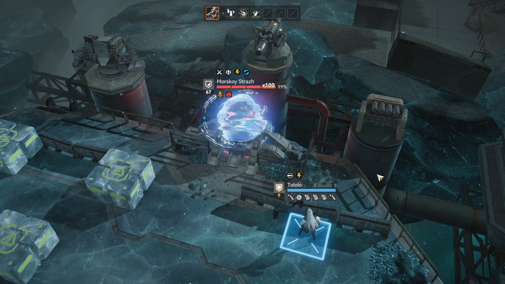

소녀전선2 망명 1.5주년 서머프론트 도쿄 이벤트 정리, 한국에서 챙길 건 따로 있다
결론부터 딱 잘라 말하면, 도쿄 서머프론트는 일본 현지 오프라인 행사라 한국에서 직접 갈 일은 거의 없고요, 우리가 진짜 챙겨야 하는 건 같은 시기에 열린 1.5주년 인게임 업데이트 쪽입니다. 트위터 타임라인에 도쿄타워 사진이 쫙 떠서 저도 처음엔 "어, 이거 한국에서도 뭐 하나?" 하고 찾아봤는데, 파고들어 보니 두 이벤트가 완전히 다른 결이더라고요. 오늘은 이 둘을 딱 갈라서, 오프라인은 정보로만 정리하고 인게임 쪽을 자세히 풀어드릴게요.
1. 서머프론트 in 도쿄, 이게 뭐냐 - 굿즈 팝업 3연전
'소녀전선2: 망명(익스아이랙스)' 일본 서비스 1.5주년을 기념해서 열리는 오프라인 팝업 이벤트인데요. 도쿄타워를 시작으로 아키하바라, 시부야까지 순차로 이어지는 구성입니다. 개최지·기간을 표로 정리하면 이렇습니다.
| 장소 | 기간 | 비고 |
|---|---|---|
| 도쿄타워 풋타운 1층 | 6/19 ~ 7/5, 매일 12:00~20:00 | 구매 최종 접수 19:30 |
| 벨사르 아키하바라 1F | 7/4 (단 하루) | - |
| SHIBUYA TSUTAYA 6층 | 7/3 ~ 7/31 | - |
| 시부야 센터가이 잭 | 7/8 ~ 7/21 | - |
도쿄타워 행사는 콘셉트도 재밌었는데요, 도쿄타워에 놀러 온 전술인형들이 약속 장소로 가다가 마키아토만 빼고 다 길을 잃어버린다는 설정으로, 관광 온 지휘관이 한 명씩 찾아 나서는 체험형이었다고 합니다. 캔뱃지·아크릴 스탠드·클리어 파일 같은 굿즈를 팔고, 일정 금액(3,300엔) 결제하면 랜덤 일러스트 카드를 준다는 내용까지 확인했고요.
여기서 명확히 짚어야 할 게, 이건 100% 일본 현지 오프라인 행사라는 겁니다. 한국에서 항공권 끊고 가는 게 아니면 참여할 방법이 없고, 인게임 계정 연동이나 온라인 응모 같은 것도 제가 찾아본 범위에선 확인이 안 됐어요. "이 이벤트 한국에서도 참여 가능해요?" 물어보시는 분들 계실까 봐 먼저 정리해 드립니다 — 구경거리, 정보성으로만 봐주시면 됩니다.
도쿄타워 1층 특설 카운터 모습(기사 인용 시 출처 표기)
참고로 한국 서버 쪽에도 비슷한 시기에 자체 오프라인 행사가 따로 있었습니다. 서울 연희동 갤러리에서 6월 27~28일 '로렐라이 무도회'라는 이름으로 진행됐던 건데요, 이것도 도쿄 서머프론트와는 별개의 한국 자체 기획입니다. 헷갈리지 않게 구분해서 알아두시면 좋겠습니다.
2. 진짜 챙길 건 이거 - 1.5주년 인게임 업데이트
제가 직접 게임 접속해서 확인해 보니, 6월 25일부터 1.5주년 메인 업데이트가 열려 있었습니다. 한국 서버 공식 계정(@EXILIUMKR)에서도 같은 날짜로 신규 인형 '로렐라이' 픽업과 상시 액세스 목록에 '하프시' 추가를 공지했더라고요 — 즉 이번 1.5주년 콘텐츠는 한국 서버에도 동일하게 적용된 업데이트입니다. 오프라인 행사만 일본 한정이지, 인게임 혜택은 한국 지휘관도 그대로 받는다는 뜻이죠.
1.5주년 보상은 크게 두 파트로 나뉘어 진행되는데요, 정리하면 이렇습니다.
| 구간 | 기간 | 핵심 내용 |
|---|---|---|
| 파트 1 | 6/25 ~ 7/15 | 신규 인형 '로렐라이' 픽업, '여명을 새기는 자' 로그인 캠페인(액세스 권한 10개) |
| 파트 2 | 7/16 ~ 8/5 | '준마가 빛 밟을 때' 로그인 캠페인(액세스 권한 10개) |
| 공통(6/25~8/5) | 약 42일간 | 로그인 보너스(액세스 권한 10개), 무료 획득 가능한 엘리트 인형 '하프시' |
| 이벤트 상점 교환 | 기간 미확정 | 정확한 교환 마감일은 게임 내 공지 확인(늦게 챙기면 재화 날림 주의) |
해외 매체 쪽 정리를 보면 이번 1.5주년 기간 동안 100회가 넘는 무료 뽑기가 풀리고, 무료 엘리트 인형 하프시에 지휘관 의상 '나이트파이어'까지 얹어준다고 하더라고요. 다만 이 수치가 한국 서버 우편함에 정확히 몇 개로 지급됐는지까지는 제가 직접 세보지 못했습니다 — 정확한 개수·경로는 게임 내 우편함과 공식 공지로 한 번 더 확인해 보시는 걸 추천드립니다.
쿠폰 코드 얘기도 빼놓을 수 없는데요, 1.5주년 전용 특별 리딤코드가 별도로 있는지는 이번 조사에서 확실하게 확인하지 못했습니다. 대신 평소처럼 붕괴 파편·사르디스 골드 같은 재화를 주는 정기 리딤코드는 계속 갱신되고 있으니, 코드는 아래 경로로 직접 넣어보시면 됩니다.
입력 경로: 메인 화면 우측 상단 '개인정보' → 교환 코드 → 코드 입력. 계정당 1회만 사용 가능하고, 보상은 게임 내 우편함으로 들어옵니다.

소녀전선2: 망명 인게임 전투 화면
이미지 출처: 스팀 공식 상점 페이지 · 네이버 본문엔 받아서 재업로드 권장
3. 오해하기 쉬운 부분 - 오프라인 ≠ 인게임 혜택
여기서 제일 중요한 함정이 하나 있습니다. 도쿄 서머프론트에 가야만 1.5주년 인게임 보상을 받을 수 있는 게 아니라는 것입니다.
두 이벤트는 완전히 별개예요.
① 도쿄 서머프론트 = 일본 현지 굿즈 판매·전시 팝업(참여하려면 실제로 현지에 가야 함)
② 1.5주년 인게임 업데이트 = 한국 서버 포함 전 지휘관이 접속만 하면 받는 로그인 보상·무료 뽑기·신규 인형
주인장이 이렇게 나눠서 강조하는 이유는, 서브컬처 팬덤 쪽에서 이런 팝업 소식이 뜨면 종종 "저거 참여 못 하면 손해 아니야?"로 오해하시는 분들이 계시기 때문이에요. 결론은 오프라인은 못 가도 괜찮고, 인게임 쪽만 접속 기간 안에 챙기면 됩니다.
인게임 1.5주년 배너, 접속만 해도 로그인 보상 확인 가능
막히는 부분 있으면 언제든 댓글 달아주세요!
▶ 같이 보면 좋은 글
· 소녀전선2 망명 관련 다른 소식 — (네이버에서 해당 글 링크를 직접 넣어 주세요)